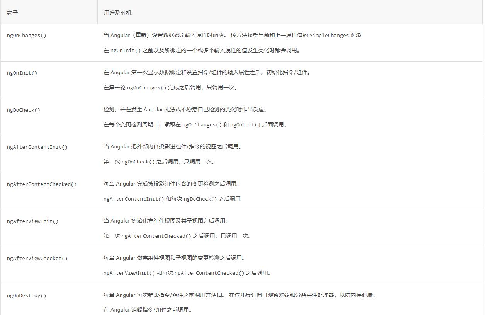

<div class="ngrx">
    <h3>这是一个<em>ngrx</em>组件</h3>
    <div class="btns">

        <div style="color: black;font-weight: 600;">
            Current Count:
            <span style="color: #2233cc;"> {{ num }}</span>
        </div>

        <button nz-button nzType="default" (click)="increment()"> Increment </button>

        <button nz-button nzType="default" (click)="decrement()"> Decrement </button>

        <button nz-button nzType="default" (click)="reset()"> Reset </button>
    </div>
    <button nz-button nzType="default" (click)="togglePic()"> ngrx原理图 </button>
    

<hr>

    <h3>模板切换</h3>
    <button class="button" ng-button nzType="primary" (click)="changeTemplate('loginByPhone')">改变模板1</button>
    <button class="button" ng-button nzType="primary" (click)="changeTemplate('register')">改变模板2</button>
    <button class="button" ng-button nzType="primary" (click)="changeTemplate('like')">改变模板3</button>

    <ng-container [ngSwitch]="currentModalType ">
        <ng-container *ngSwitchCase="'loginByPhone'">
            <div class="template">11111</div>
        </ng-container>
        <ng-container *ngSwitchCase="'register'">
            <div class="template">2222</div>
        </ng-container>
        <ng-container *ngSwitchCase="'like'">
            <div class="template">33333</div>
        </ng-container>
    </ng-container>

    <p (click)="toggel()" class="cursor-point">Angular生命周期方法图示<em class="red-f">点我看图</em></p>
    
</div>